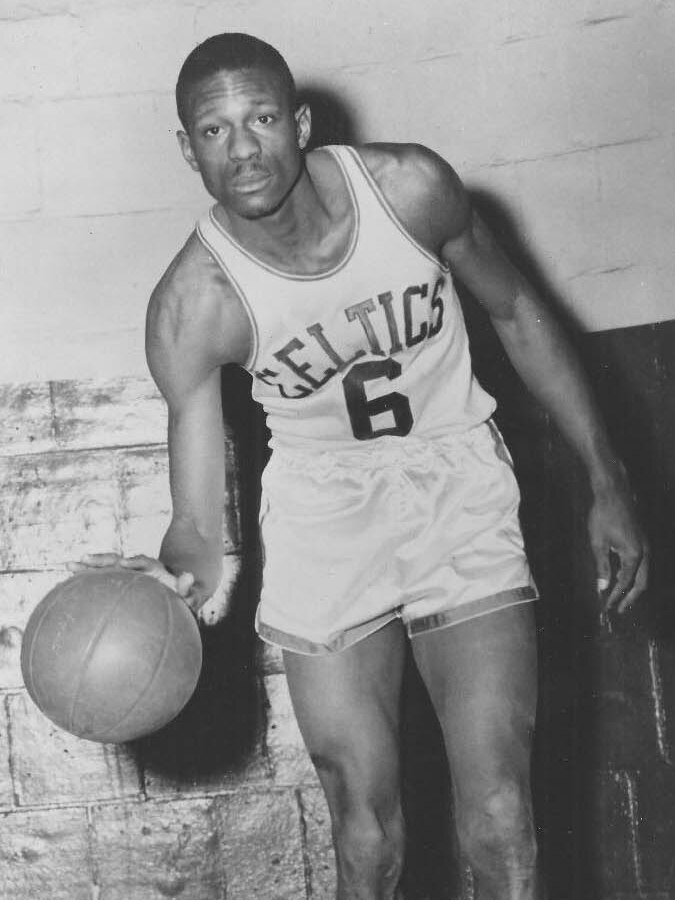
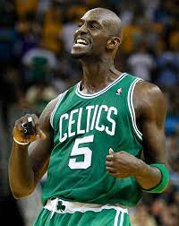
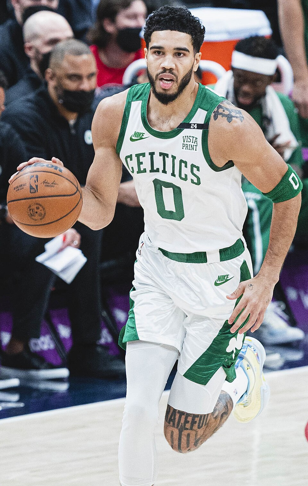

Boston Celtics |
|||||

|
The Boston Celtics are an American professional basketball team based in Boston, Massachusetts, and are one of the most successful franchises in sports history, having won a total of 18 NBA championships. Founding: Founded in 1946 by Walter Brown, the team was a charter member of the Basketball Association of America (a forerunner of the NBA, established in 1949). They played on the distinctive parquet court of the Boston Garden until 1995. The Dynasty Era (1950s–1960s): The team's first great era began with the hiring of Red Auerbach as head coach in 1950. With an iconic lineup including Bill Russell (a five-time MVP and dominating center), Bob Cousy, Bill Sharman, and John Havlicek, the Celtics won their first title in 1956–57. They then proceeded to win 11 of 13 NBA championships between 1957 and 1969, including an unprecedented eight consecutive titles (1958–59 to 1965–66). Russell served as player-coach from 1966 to 1969.The 1970s: The team won two more titles in the 1973–74 and 1975–76 seasons, led by Dave Cowens, Paul Silas, and Jo Jo White. The Larry Bird Era (1980s): In 1978, the Celtics drafted Larry Bird, who became arguably the most beloved Celtic. Along with Robert Parish and Kevin McHale, the team advanced to the NBA Finals five times in the 1980s, winning three more championships (1980–81, 1983–84, and 1985–86) in a fierce rivalry with the Los Angeles Lakers, led by Magic Johnson. Recent Success: After a prolonged playoff drought in the mid-1990s, the team returned to championship contention. In the 2007–08 season, the "Big Three" of Paul Pierce, Kevin Garnett, and Ray Allen led the team to their 17th title. The team rebuilt around a young core including Jayson Tatum and Jaylen Brown, reaching the conference finals multiple times and the NBA Finals in 2021–22. The Celtics had a dominating 2023–24 season, losing only 18 regular season games and 3 in the playoffs, en route to winning their 18th NBA title. | ||||
Best players |
|||||

|
 |  |

|
 | |

|
|||||